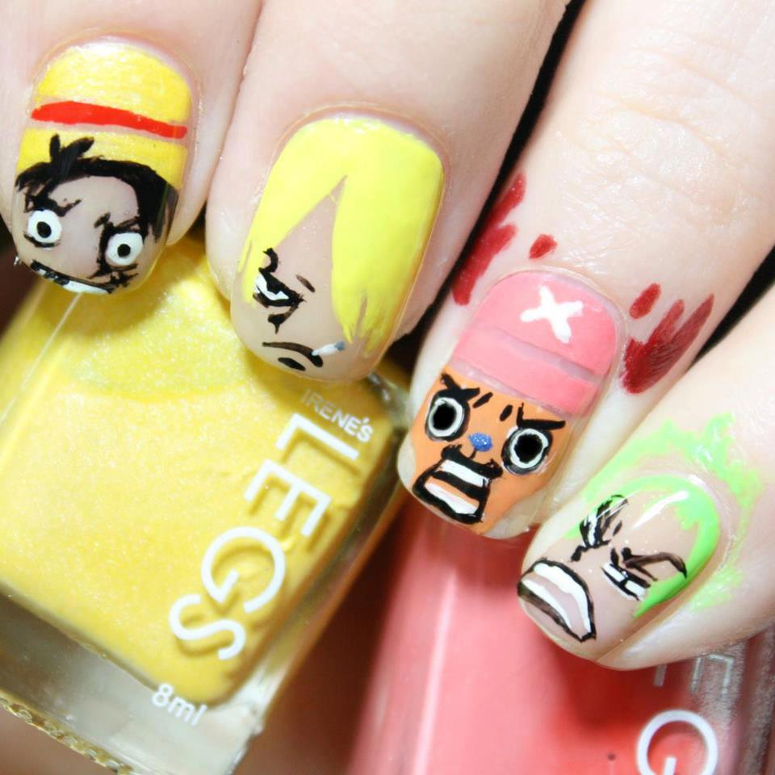

common header
回首頁
活動辦法
教學影片
網頁投票
指甲彩繪
美髮造型
獎項資訊
好店推薦
轉職新契機
回首頁
活動辦法
教學影片
網頁投票-美甲彩繪
網頁投票-美髮造型
獎項資訊
好店推薦

謬思-希臘花園
參賽者：Sophya
此次作品主題以頭髮代替髮圈的概念，作品風格高貴優雅，此次作品主題以頭髮代替髮圈的概念，此次作品主題以頭髮代替髮圈的概念，作品風格高貴優雅，此次作品主題以頭髮代替髮圈的概念。此次作品主題以頭髮圈的概念。
回美甲彩繪
國民黨籍台南市議長李全教競選總幹事、樁腳等人，因涉賄遭檢起訴；另外，民進黨籍台南市副議長郭信良涉收款護航環評案，也遭起訴。對此，藍營立委強調，尊重司法，靜待後續調查，同時也呼籲台南市長賴清德以及民進黨，不要只會講別人。 國民黨籍立委林國正今天中午接受本報記者訪問時說，遭起訴的李全教競選總幹事、樁腳、選民等，究竟是李全教授意？還是私下主動？也都待檢方釐清，外界此刻不應該有過多政治解讀。他強調，絕對尊重司法，希望政治力不要介入，也盼證據到哪就辦到哪，一定要做出公平、公正、公開的判決。 另一國民黨籍立委蔡錦隆則說，台灣是無罪推論，起訴不一定有罪，尊重、靜待司法調查。但他仍對於賴清德挾高選票支持，因此拒絕進議會一事感到失望，他說，賴清德出身立法院，卻做出民主最壞示範，破壞憲政監督與制衡原則，也違反民主及地方自治精神。 此外，民進黨籍台南市副議長郭信良涉嫌打包票疏通官田鋼鐵環評案，南檢也在今天偵結，環評案依貪污罪起訴；另外，郭涉嫌向東昇營造取款案，則依詐欺取財起訴。 對此，林國正說，郭信良遭起訴，也突顯民進黨一直要國民黨主席朱立倫改革國民黨，是雙重標準，「不要只講別人嘛！」民進黨人士在要求朱立倫改革的同時，是否也應該要求民進黨主席蔡英文改革民進黨。